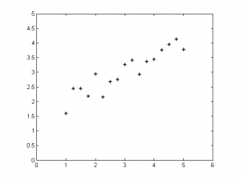

Temel Bileşenler Analizi
Tekil değer ayrışımını incelediğimiz ilk üç (#1, #2, #3) yazıdan sonra temel bileşenler analizine girmemiz için eksik kalmadı.
Bu yazıda üstüne gürültü eklenmiş bir doğrudan alınan örnekleri analiz edeceğiz. Elimizdeki doğruyu oluşturalım:
x = 1:0.25:5; y = 1/2*x + 1; y = y + rand(size(y)); plot(x, y, '*k') axis equal axis([0 6 0 5])
Aslında noktalar tek doğrultuda yerleşmişken ve bir boyut ile ifade edilebilecekken iki boyutlu olarak gözlemlenmiş. Gürültü nedeniyle de tam olarak bir doğrunun üstündeymiş gibi görünmüyorlar.
Buradaki örnekler fiziksel bir deneyin gözlem sonuçları olabilirdi; örneğin bir yayın salınımının kamera kaydı.
J. Shlens'in verdiği bu örnekte farklı konumlandırılmış kameralar kırmızı topun 2B koordinatlarını kaydediyorlar. Bu bilgiler birbirine oldukça bağımlı, çünkü hem top bir doğru üstünde salınıyor hem de bir kameranın bilgisi ile diğer kameraların bilgileri edinilebilir.
Kolaylık olması için üç kamerayı daha sonra üstüne düşünmek üzere okura bırakayım ve temel örneğimize geri dönelim. Gözlemlediğimiz veride fazladan bilgi var; 1B ile ifade edebilecekken boş yere her nokta için 2B koordinat saklıyoruz. Bu hem veriyi yorumlamamızı zorlaştırıyor, hem de veri hafızada iki kat yer tutuyor. Boyut düşürdüğümüzde bir taşla iki kuş vurabileceğiz.
Amacımızı hatırlayalım. Kullanılan eksenlerin birbirinden bağımsız olmasını hedefliyoruz. Çünkü x değerini bildiğimizde bu bize y değeri hakkında bilgi veriyorsa y değeri x bilgisine bağlıdır ve içinde gereksiz bilgi bulunur. Örneğin y=x doğrusunu düşünün. x değerini bilmek y değerini zaten beraberinde bilmemizi sağlar ve her nokta için (x, y) koordinatı tutmak gereksiz zahmettir. Yapmamız gereken doğrunun doğrultusunu bulmak ve sadece x değerlerini saklamaktır.
Eksenlerin birbirinden bağımsız olması demek kovaryanslarının 0 olması demektir. Yani iki eksenin kovaryansına bakarak birbirlerine bağımlı olup olmadıklarına bakabiliriz. Örnekteki x ve y değerleri için bakacak olursak:
(x-mean(x))*(y-mean(y))^T / (length(x)-1)
Sonuç 0.8272 çıktı. Bağımlılık var. Tüm eksenlerin birbirleriyle kovaryanslarını görmemize yarayan kovaryans matrisine bakalım bir de:
cov(x,y)
ans =
1.5938 0.8272
0.8272 0.5043
Bu örnekte 2x2lik olduğu için pek açık değil fakat daha fazla boyutta olsaydık bu matrisin kıymeti daha iyi anlaşılacaktı. Eğer noktaları sütun sütun yerleştirerek veri matrisi $\mathbf{X}$'i oluştursaydık, ilgili eksenlerin ortalama değerleri $\bar{x}$ ve $\bar{y}$, ve nokta sayısı $N$ olmak üzere kovaryans matrisi şöyle hesaplanacaktı:
$$\mathbf{C} := \text{Cov}(\mathbf{X}) = \frac{1}{N-1} \left( \mathbf{X}-\begin{bmatrix}\bar{x}\\ \bar{y}\end{bmatrix} \right) \left( \mathbf{X}-\begin{bmatrix}\bar{x}\\ \bar{y}\end{bmatrix} \right)^T$$
Kullanılan eksenlerin birbirinden bağımsız olmasını istiyorduk, yani kovaryanslarının sıfır olmasını. Demek ki $\mathbf{C}$ matrisini köşegen (diagonal) bir matris haline getiren dönüşümü arıyoruz. Ve biliyoruz ki, kovaryans matrisi her zaman negatif olmayan sayılardan oluşur ve simetriktir. Gerçel simetrik matrisler her zaman köşegenleştirilebilir. Özdeğer ayrışımı bu iş için temel bir yaklaşımdır. Biz de köşegenleştirmek için özdeğer ayrışımına başvuralım. $D$ boyut sayısı, $\mathbf{e}_i$ özvektörler ve $\lambda_i$ özdeğerler olmak üzere, $\mathbf{C}$ matrisi şu eşitliği sağlar:
$$\begin{align} \mathbf{C}\mathbf{e}_i = \lambda_i \mathbf{e}_i \ \ i=1,\dots, D \end{align}$$
Özvektörleri $\mathbf{E}$ matrisinin sütunları, özdeğerleri de $\mathbf{\Lambda}$ matrisinin köşegenleri olacak şekilde düzenlersek:
$$\begin{align}\mathbf{C} = \mathbf{E} \mathbf{\Lambda} \mathbf{E}^T \end{align}$$
biçiminde tüm ayrışımı özetleyebiliriz.
Genel anlamda $\mathbf{x} = (x_1, \dots, D)$ vektörünü, $\mathbf{\bar{x}}$ ortalama değerleri kullanılarak
$$\mathbf{p} = \mathbf{E} (\mathbf{x} - \mathbf{\bar{x}})$$
biçiminde yeni uzayda tanımlamak mümkündür. $\mathbf{p}$'nin değerleri birbirinden bağımsızdır. İlk değerleri geri elde etmek için
$$\mathbf{x} = \mathbf{E}^T \mathbf{p} + \mathbf{\bar{x}}$$
formülü işimizi görecektir.
Dikkat edilirse, özvektörleri ve ortalamayı kullandık. Özdeğerleri ise kullanmadık. Özdeğerler bize temel bileşenler yönünde elde edilen varyansları verir. Çünkü dönüşüme uğramış $\mathbf{x}$ noktalarının kovaryans matrisinin köşegenini, yani varyans değerlerini oluştururlar. Köşegen dışındaki değerler de artık sıfırdır. Özdeğerler genelde kaç adet boyut saklamamız gerektiğini hesaplamak için kullanılır. Yapılan analizlerde çoğunlukla toplam varyansın %95 veya %98'ini kapsayacak şekilde en büyük özdeğerlere ait özvektörler hesaba katılır ve diğerleri atılır. Bu durumda dönüşüm veriyi tam olarak ifade edemez, yaklaşık bir değer verir. Üstteki $\mathbf{E}$ yerine tüm özvektörler yerine bir kısmında oluşan özvektör matrisi $\mathbf{\hat{E}}$'yi koyarsak eşitlikler yaklaşık değer olarak değişmelidir.
Tekil değer ayrışımı ile ilişki
$\mathbf{C}$ kovaryans matrisinin özdeğer ve özvektörleri ile $\mathbf{X}$ veri matrisinin tekil değer ve vektörleri arasındaki ilişki nedir?
İlişkiyi sağlayabilmek için $\mathbf{Y}$ matrisi tanımlayalım ve $\mathbf{X}$ matrisinin ortalamadan çıkarılmış ve $\frac{1}{N-1}$ katsayısıyla kafa karışmaması için ölçeklenmiş değerlerinden oluşsun. Yani
$$\mathbf{C} = \mathbf{Y} \mathbf{Y}^T$$
$\mathbf{Y}$ matrisinin tekil değer ayrışımı şu şekilde olsun
$$\mathbf{Y} = \mathbf{U} \mathbf{\Sigma} \mathbf{V}^T$$
$\mathbf{C}$ matrisini tekrar yazarsak
$$\begin{align}\mathbf{C} &= \mathbf{Y} \mathbf{Y}^T \\
&= \mathbf{U} \mathbf{\Sigma} \mathbf{V}^T \mathbf{V} \mathbf{\Sigma}^T \mathbf{U}^T \\
&= \mathbf{U} \mathbf{\Sigma}^2 \mathbf{U}^T \\
&= \mathbf{E} \mathbf{\Lambda} \mathbf{E}^T \end{align}$$
Görüldüğü üzere kovaryans matrisinin özvektörleri, normalize edilmiş veri matrisinin (örnekler sütun sütun yazıldığında) sol tekil vektörüne eşit oldu. Kovaryans matrisinin özdeğerleri ise veri matrisinin tekil değerlerinin kareleri oldu. Yani kovaryans matrisinin özdeğer ayrışımı yoluyla hesaplanınca, temel bileşenler yönündeki varyanslar bulunurken; veri matrisinin tekil değer ayrışımına bakılırsa, standart sapmalar bulunuyor.
Ortalamayı çıkarmasak n'olur?
Motivasyonumuz yeni elde edilecek eksenlerin birbirinden bağımsız olması idi. Bunun için de kovaryans matrisin köşegeni dışındaki değerleri sıfırlamayı hedefliyorduk. Ortalamayı çıkarmazsak ortada bir kovaryans matrisinden söz edemeyiz, incelediğimiz şey tam olarak aradığımız şey olmaz. İlk özvektör her zaman koordinat merkezinden (orijinden) ortalamaya doğru uzanan doğrultuda çıkar. Diğer bileşenler de buna dik olacak şekilde en yüksek varyansın olduğundan en az olana doğru sıralanır.
Hem farkı göstermek hem de temel bileşenler analizinin ne kadar kolay hesaplanabildiğini göstermek amacıyla bir örnek yapalım:
clc, clear
%% Bir doğru çizelim
x = 1:0.25:5;
y = 1/2*x + 1;
%% y yönünde biraz gürültü ekleyelim
y = y + rand(size(y));
%% Çizelim, görelim
subplot(1,2,1), plot(x, y, '*k')
axis equal
axis([0 6 0 5])
%% Verileri sütunlara koyup SVD'nin ne verdiğine bakalım
A = [x;y];
[U, S, V] = svd(A);
hold on
plot([mean(x)-U(1,1)*S(1,1) mean(x)+U(1,1)*S(1,1)], ...
[mean(y)-U(2,1)*S(1,1) mean(y)+U(2,1)*S(1,1)], ...
':k');
plot([mean(x)-U(1,2)*S(2,2) mean(x)+U(1,2)*S(2,2)], ...
[mean(y)-U(2,2)*S(2,2) mean(y)+U(2,2)*S(2,2)], ...
'-.k');
title('Doğrudan bulunan tekil vektörler')
%% Şimdi ortalamayı çıkarıp aynı işlemleri bir kez daha yapalım
A(1,:) = A(1,:) - mean(A(1,:));
A(2,:) = A(2,:) - mean(A(2,:));
[U, S, V] = svd(A);
subplot(1,2,2)
plot(x, y, '*k')
axis equal
axis([0 6 0 5])
hold on
plot([mean(x)-U(1,1)*S(1,1) mean(x)+U(1,1)*S(1,1)], ...
[mean(y)-U(2,1)*S(1,1) mean(y)+U(2,1)*S(1,1)], ...
':k');
plot([mean(x)-U(1,2)*S(2,2) mean(x)+U(1,2)*S(2,2)], ...
[mean(y)-U(2,2)*S(2,2) mean(y)+U(2,2)*S(2,2)], ...
'-.k');
title('Ortalama çıkarılınca bulunan tekil vektörler')
Bulduğumuz yeni baz vektörler doğrultusundaki standart sapmalar 5.71 ve 0.97 olarak çıktı (Rastgele gürültü eklediğimiz için sizde ufak farklılıklar gösterebilir.). Bileşenleri yalnızca birbirinden bağımsız kılmadık, önem değerine göre sıraladık. Tabii bunda varyansın çok olduğu doğrultuları önemli olarak varsaydık.
Aslında tüm bunlar eldeki veriye çok boyutlu esnek bir normal dağılım oturtmak ile eşdeğer.
Tekil değer ayrışımının matematiksel temelleri ile başladığımız yazı dizisini temel bileşenler ayrımı ile noktalıyorum. Okur bu aşamadan sonra daha detaylı bir anlatım için J. Shlens'in makalesine bakabilir, arama motorlarının sıkça kullandığı Hubs and Authorities ile PageRank algoritmalarını inceleyebilir veya gizli anlam analizi (latent semantic analysis) konusunu rahatlıkla öğrenebilir. Dilerse aktif şekil/görünüm modellerinde nasıl kullanıldığını öğrenmek için yüksek lisans tez sunumumun ilk kısmını izleyebilir. Farklı dillerde kodlanmasına örnek olarak da yine bu sitedeki yazılara başvurabilir: (Opencv/C++, Matlab, Python)


{kind=link}
{kind=link}
{kind=link}
10 yorum
Bu ve bu gibi yazilar Turkce bilim iceriginde buyuk bir acigi kapatiyorlar. Benim cok isime yariyorlar sahsen, emegine saglik.
Teşekkür ederim. Zamanım olsa da daha güzel ve çok konuda yazabilsem keşke. Bunlar benim şu aralar uğraştığım çokboyutlu (multilineer) tekil değer ayrışımının yapıtaşları. Uğraşırken en temellerde eksikler olduğunu farkedince toparlamak istedim. Ben de zamanında tam anlamadan geçmişim, her şeyine vakıf olamayınca üstüne yeni şeyler eklemek mümkün olmuyor. "Ezbercilik" oluyor bir nevi. Bir de dil meselesi var tabii, o kadar İngilizce bilmeme rağmen kendi dilimde olunca daha bir rahat oluyor kavramam. Bu da Türkçe içerik hazırlamada ana motivasyonu sağlıyor.
Benim dışımda da ilgi uyandırmasına ve yararlanılmasına seviniyorum. Benzer şekilde temel konulara çarptıkça başa dönüp toparlamaya devam edeceğim :)
Ingilizcede bu gibi konulari anlatan -adamlar farkli dusunen kisiler cikarabildikleri icin- cok guzel kaynaklar bulunabiliyor. Ama dil problemini asmak her zaman mumkun olamiyor. Ozellikle alinan bir derste bu konular ogrenilmeye calisiliyorsa hele, zaten egitim sisteminin yapisindan dolayi en kolay bir sekilde formul ezberlenip geciliyor. Daha bugun girdigim bir sinavda N boyutlu Gauss dagilimini ezberlemem bekleniyordu, formulu bilmek dert degil ama insan sormak istiyor N boyutlu Gauss denince gosterilenin sadece formul mu olmasi lazim diye...
Halbuki ozellikle bu kavramlarin iyice anlasilmasi, gorsellestirilmesi, tartisilmasi lazim. Turkce icerikli bunu yapan kitaplar yok, iletisim caginda oldugumuzdan iyi ki boyle bloglar bulabiliyoruz. Ben de boyle icerikler olusturmayi denedim ama gorundugu kadar kolay olmadigini anlamam zor olmadi. O yuzden bu yapilan is cok onemli. Icerikler zamandan bagimsiz, bu gibi temel icerikleri anlayamayan her merakli icin online durdukca cok faydali olacak suphesiz.
Bir de anladigim kadariyla son zamanlarda matris faktorizasyonu gibi konular calisiyorsun. Ben de benzeri bir konuya bakacagim, bakalim bu gibi taslara kafami kac kez vuracagim :)
Evet, kesinlikle çok güzel kaynaklar var. Bahsettiğim Shlens'in anlatımı harika örneğin. Ben de ondan okuyunca anlamıştım bu işlere neden giriştiğimizi. Bu tarz yazılar eklemek cidden zor. Örneğin TDA'nın ilk yazısı bütün bir öğleden sonramı aldı. Matematik ve kod yazımının hem kendisi zor, hem de web sayfasına gömmek dert. Ama önceki yazılarda bahsettiğim gibi eklentiler ve MathJax ile kısmen de olsa çözdüm bunu. Doğru şekilde formatlı olmayan içerik hoşuma gitmediği için daha da uğraltırıyor beni :)
Bu aralar matris faktorizasyonunun daha fazla boyutta olanlarına bakıyorum. Yani tensör faktorizasyonlarına.
Emeginize sağlık. Çok güzel çalışmalarınız var.
Merhaba,
Emeğinize sağlık. Sitenize ve paylaştığınız bilgilere bayıldım. Herkes sizin gibi olsa, bilginin paylaştıkça çoğalabildiğini anlasa Türkiye dünya devi olurdu. Sitenizden çok faydalandım. Allah razı olsun.
Ali Said ve Faruk, çok teşekkür ederim.
Çok teşekkür ederim. Emeğinize sağlık.
[...] dostum İsmail Arı şuradaki yazısında PCA hakkında kapsamlı ve güzel bilgiler veriyor. İsmail yazısında kovaryans matrisini [...]
Çok güzel anlatmışsın abi, emeğine, zihnine sağlık.